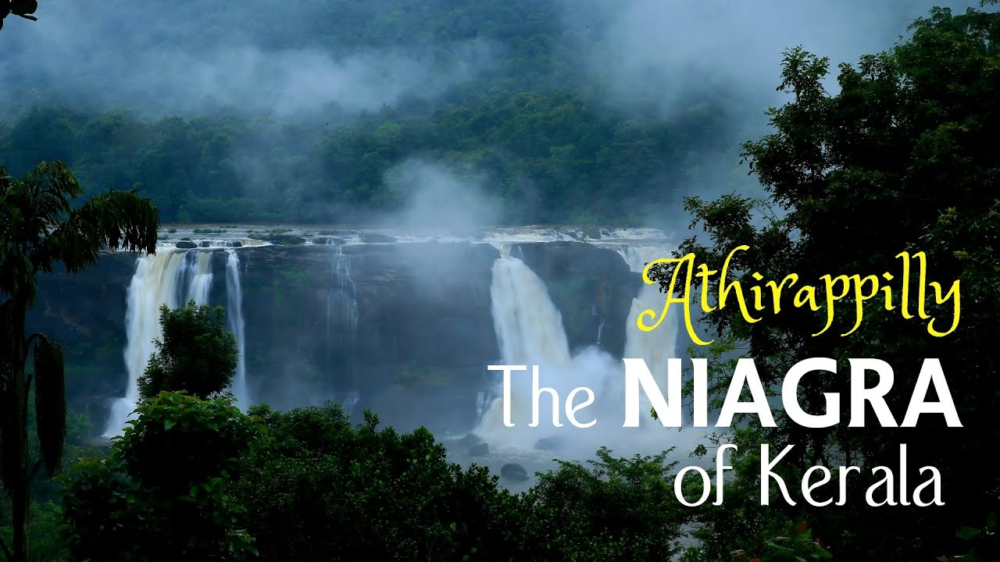
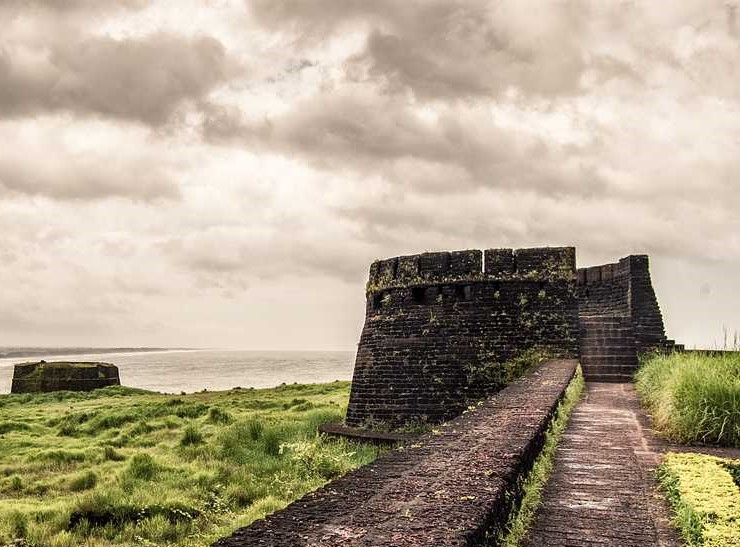
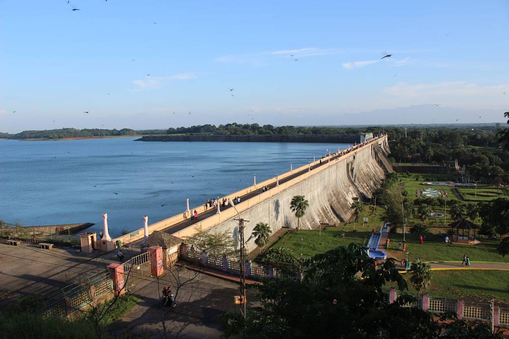
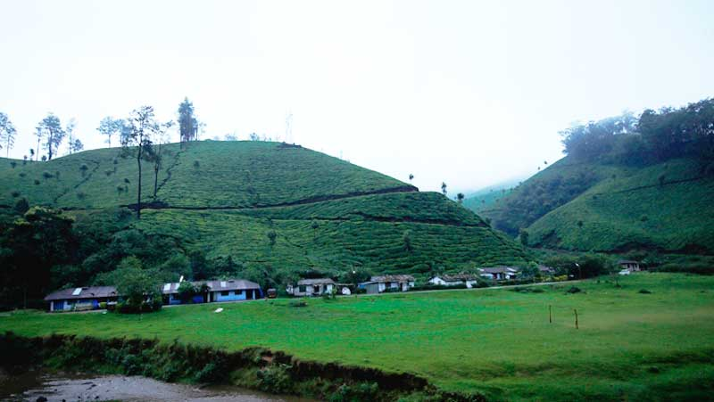
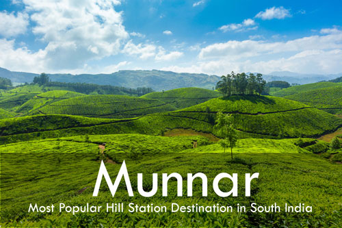
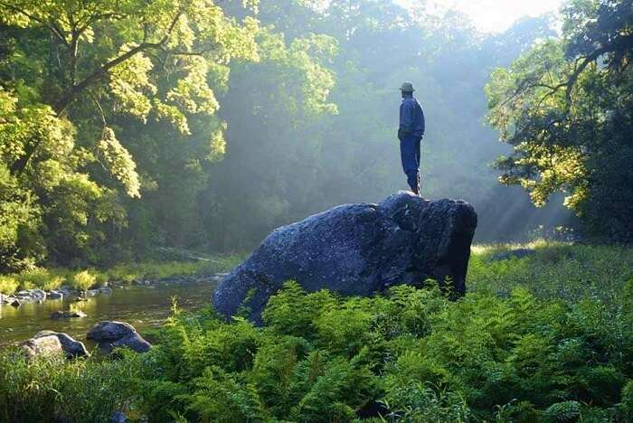
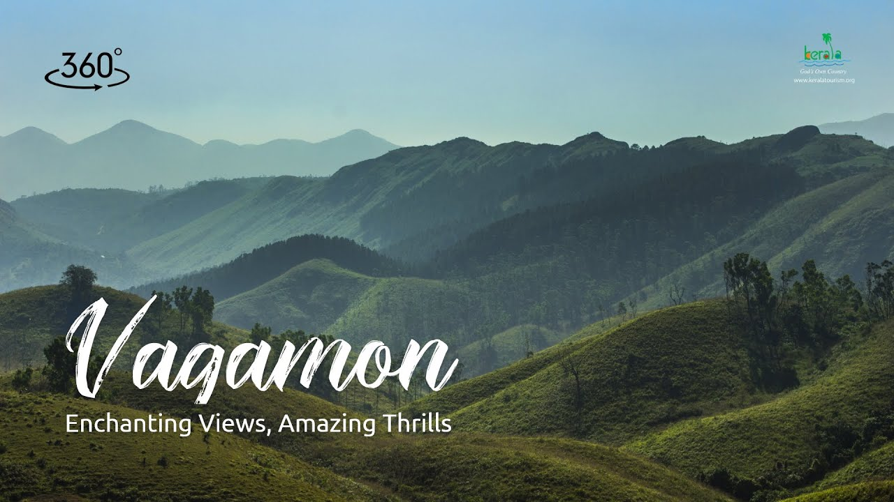
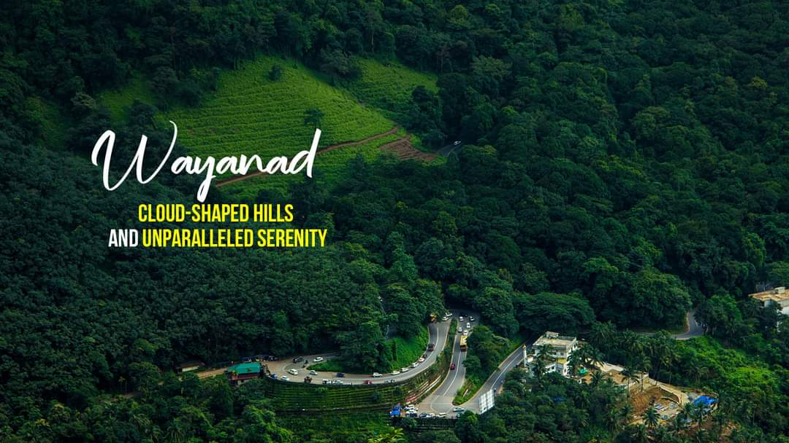

| Kerala Tourism | Book Now | Contact us |
|---|
 Alappuzha Referred to as the Venice of the East, Alappuzha has always enjoyed an important place in the maritime history of Kerala. Today, it is famous for its boat races, backwater holidays, beaches, marine products and coir industry. Alappuzha Beach is a popular picnic spot. The pier, which extends out to the sea here, is over 137 years old. Entertainment facilities at the Vijaya Beach Park add to the attraction of the beach. There is also an old lighthouse nearby which greatly intrigues all visitors. Book Now |
 Athirappally Said to be the 'Niagara of Kerala', the Athirapally waterfalls is a mind-boggling site, which will definitely make you relaxed and rejuvenated. The largest waterfall of Kerala, Athirappally forms over Chalakudy River in Vazhachal forests of the Western Ghats. A must visit place in Kerala, Athirappally always refreshes your mind making you forget all the busy schedules of your life. The splashing water, the soothing climate, the greenish nature, everything is fresh at Athirappally. Book Now |
 Bekal Kasaragod boasts of the largest and best preserved Fort in the whole of Kerala, bordered by a magnificent beach. Shaped like a giant keyhole, the historic Bekal Fort was built in the 17th century. This historic monument offers a superb view of the Arabian Sea from its tall observation towers, which were occupied by gigantic cannons till afew centuries ago. Book Now |
|---|---|---|
 Cherai Beach Around two dozen kilometres from the industrial district of Ernakulam and to the side of the Vypeen Island lies every swimmer's paradise, Cherai Beach. It is a favourite haunt of those looking for a relaxing swim with the backdrop of coconut groves being the added incentive. It provides a wonderful view of the famous Chinese Fishing Nets or Cheena Vala well. The nearby shacks provide you with fresh cuisine that fills you up perfectly after a delightful swim. Book Now |
 Fort Cochin Set foot into Fort Kochi and you will be instantly transported to a different time period. This place is steeped in the history and culture of all who have occupied it through the ages. Its roots and essence are unique in its diversity. Book Now |
 Kovalam Kovalam is an internationally renowned beach with three adjacent crescent beaches. It has been a favourite haunt of tourists since the 1930s. A massive rocky promontory on the beach has created a beautiful bay of calm waters ideal for sea bathing. Book Now |
 Kumarakom The village of Kumarakom is a cluster of little islands on the Vembanad Lake, and is part of the Kuttanad region. The bird sanctuary here, which is spread across 14 acres is a favourite haunt of migratory birds and an ornithologist's paradise. Egrets, Darters, Herons, Teals, Waterfowls, Cuckoo, Wild Duck and migratory birds like the Siberian Stork visit here in flocks and fascinate all visitors. Book Now |
 Kumbalangi Kumbalangi Integrated Tourism Village Project is a unique initiative to transform the tiny island of Kumbalangi into a model fishing village and tourism spot. It is the first of its kind in India and is located in Kochi. It is blessed with many natural wonders and the people who visits are treated to many a rare treat. Book Now |
 Malampuzha Surrounded by the beautiful hills of the Western Ghats, Malampuzha Dam is one of the most visited sites in Palakkad district. Besides the dam, there is a horde of picnic attractions popular in the place, along with some amazing trekking trails. Read MoreBook Now |
|
 Marayoor The first thing the place Marayoor brings to the mind of a traveler is its air redolent with the smell of sandalwood and the relish of jaggery – Marayoor sharkara - uniquely made from the sugarcane farms of the place. Book Now |
 Munnar Munnar rises as three mountain streams merge - Mudrapuzha, Nallathanni and Kundala. 1,600 m above sea level, this hill station was once the summer resort of the erstwhile British Government in South India. One of the most sought after honeymoon destinations in Kerala, Munnar is replete with resorts and logding facilities that fit a wide rage of budgets. Sprawling tea plantations, picturesque towns, winding lanes and holiday facilities make this a popular resort town. Among the exotic flora found in the forests and grasslands here is the Neelakurinji. This flower which bathes the hills in blue once in every twelve years, will bloom next in 2030. Munnar also has the highest peak in South India, Anamudi, which towers over 2,695 m. Read MoreBook Now |
 Silent-Valley The eerie silence, emphasised by the missing Cicadas that gave Silent Valley its name, may make you feel and hear things you could never have imagined. A few centuries ago, before humans reached the Silent Valley, this reserve of tropical rainforests stood undisturbed and tranquil like a perfectly hidden diamond. Book Now |
|
 vagamon Vagamon hill station in Idukki is among the few spots on the planet that need to be experienced first-hand to truly discover its glory. The grassy hills, velvet lawns and overall mysticism of the place cannot be replicated anywhere else in the world. This quaint town lies untouched by any modern influences and is neatly tucked away in Idukki district. Visitors can avail many activities including trekking, paragliding, mountaineering and rock climbing. People love travelling across a chain of three famous hills: Thangal, Murugan and Kurisumala. These are important to Hindus, Muslims and Christians, respectively, and are a perfect example of the communal harmony prevalent in the place. The Kurisumala monks have an enchanting dairy farm nearby that is an absolute delight to visit. Read MoreBook Now |
 Varkala Location: 51 km north of Thiruvananthapuram city in Thiruvananthapuram district and 37 km south of Kollam, south Kerala. Varkala, a calm and quiet hamlet, lies on the outskirts of Thiruvananthapuram district. It has several tourist attractions that include a beautiful beach, a 2000-year-old Vishnu Temple and the Ashramam - Sivagiri Mutt a little distance from the beach. The Papanasam Beach (also called as Varkala Beach), which is ten kilometers away from Varkala, is renowned for a natural spring. Which is considered to have medicinal and curative properties. A dip in the holy waters at this beach is believed to purge the body of impurities and the soul of all sins; hence the name 'Papanasam Beach'. A two thousand-year-old shrine the Janardhanaswamy Temple stands on the cliffs overlooking the beach, a short distance away. The Sivagiri Mutt, founded by the great religious reformer and philosopher Sree Narayana Guru (1856 - 1928) is also close by. Read MoreBook Now |
 wayanad Adorning the northern hills of Kerala is the beautiful district of Wayanad, maintained by the District Tourism Promotion Council, Wayanad. This area is famous for its large amount of camping and trekking trails, breathtaking waterfalls, caves, bird-watching sites, flora, fauna and an overall plethora of magnificent sights. This area has been a tourist favourite over the years. People are especially delighted by the range of exotic products including spices, coffee, tea, bamboo products, honey and herbal plants available here. Kanthanpara Waterfalls is one hotspot in Wayanad that allures tourists from all over the world. Apart from these magnificent falls, Wayanad calls you to experience the stunning beauty of Karapuzha Dam, Pookode & Karlad Lake as well. If you are an adventure seeker, then Cheengari Rock Adventure Center is a must-visit place for you. Another must-visit place in Wayanad is the Edakkal Caves. The caves are two natural rock formations believed to have been formed by a large split in a huge rock. The carvings inside are extremely beautiful. Read MoreBook Now |